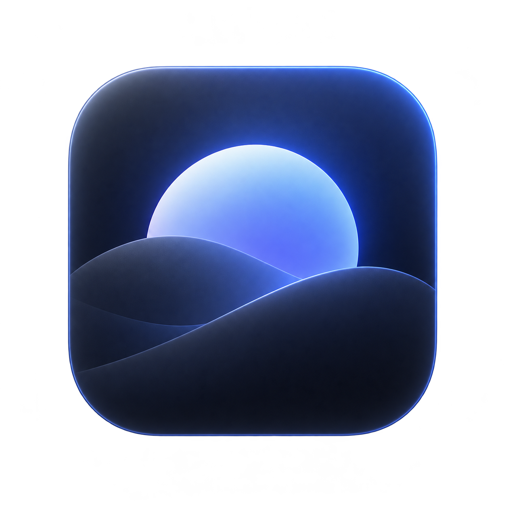

Deep Focus Mode
Less distraction. More focus.
A free, open-source native macOS menu bar app. Keep your active window bright and dim the area around it.
- Quick Focus and adjustable dimming from 0% to 85%.
- English and Turkish interfaces.
- Works offline, without accounts, tracking or analytics.
- No Accessibility or Screen Recording permission required.
Version 1.0 is being prepared. It is not yet available on the Mac App Store. Full-screen windows suspend dimming; extended display and workspace compatibility testing is ongoing.
Support
For bugs, questions and feedback, open a GitHub issue. Include your macOS version, app version and steps to reproduce. Do not post private screen content. GitHub issues are public.
Daha az dikkat dağınıklığı. Daha çok odak.
Ücretsiz ve açık kaynaklı yerel macOS menü çubuğu uygulaması. Etkin pencereniz aydınlık kalırken çevresi kararır.
- Hızlı Odak ve %0–85 arasında ayarlanabilir karartma.
- Türkçe ve İngilizce arayüz.
- Hesap, takip ve analiz olmadan çevrimdışı çalışma.
- Erişilebilirlik veya Ekran Kaydı izni gerektirmez.
1.0 sürümü hazırlanıyor. Henüz Mac App Store’da yayınlanmadı. Tam ekran pencerelerde karartma duraklar; ekran ve çalışma alanı uyumluluk testleri devam ediyor.
Destek
Hata, soru ve geri bildirim için GitHub üzerinden bildirim açın. macOS sürümünü, uygulama sürümünü ve sorunu tekrarlama adımlarını ekleyin. Özel ekran içeriklerini paylaşmayın. GitHub bildirimleri herkese açıktır.